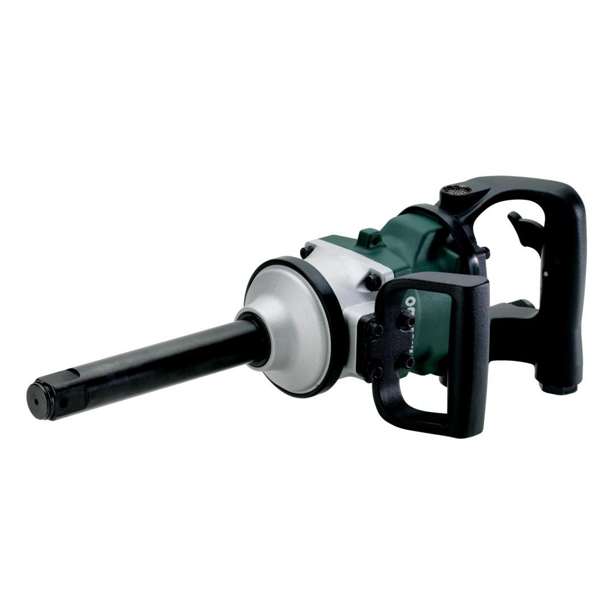

601551000

| Square holder | 1" |
| Max. loosening torque | 2440 Nm / 21596 in-lbs |
| Operating pressure | 6.2 bar / 90 psi |
| Air requirement | 13 l/s / 28 cfm |
| Square holder | 1" |
| Max. loosening torque | 2440 Nm / 21596 in-lbs |
| Weight | 7.3 kg / 16.1 lbs |
| Impact screwdriving | 17.3 m/s² |
| Uncertainty of measurement K | 2.21 m/s² |
| Sound pressure level | 99 dB(A) |
| Sound power level (LwA) | 110 dB(A) |
| Uncertainty of measurement K | 3 dB(A) |
| EURO Plug-in nipple 1/2" |
| ARO/Orion Plug-in nipple 1/2" |
| ISO Plug-in nipple 1/2" |
| Hose nozzle 10 mm and hose clamp according to ISO 11148 |
| 1 oil bottle |